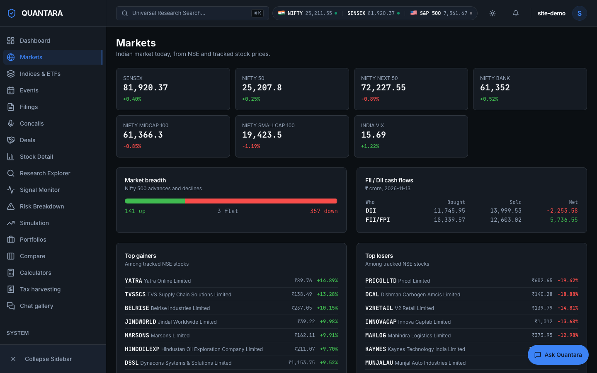
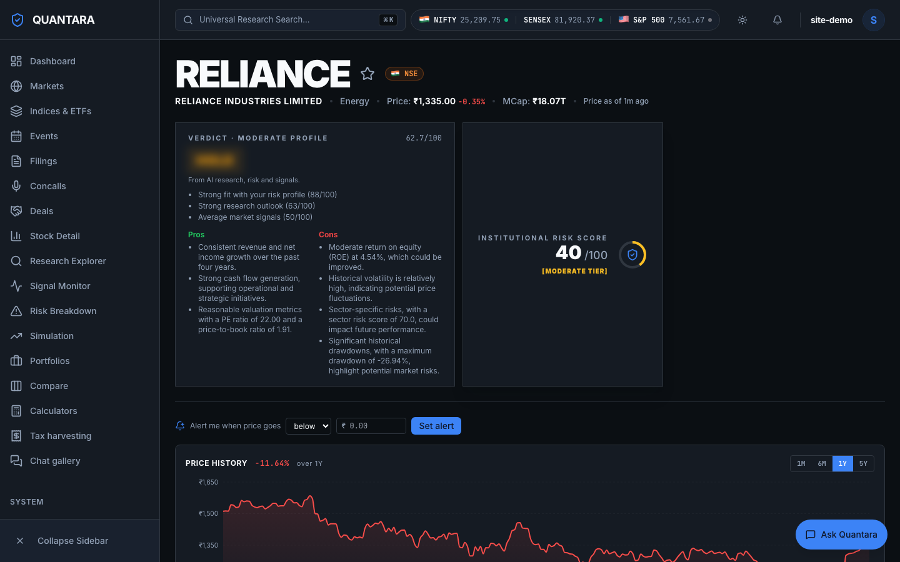
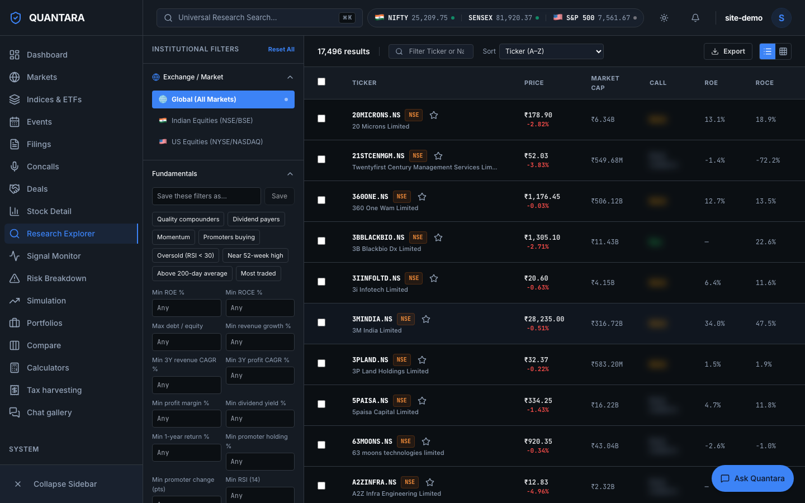
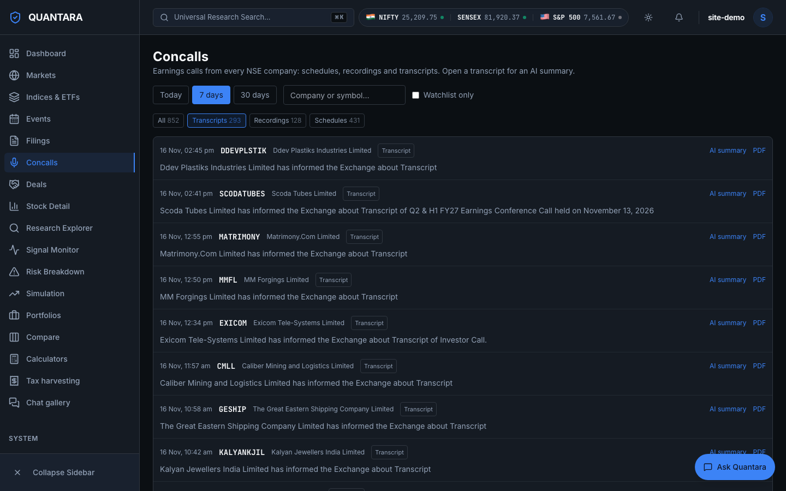
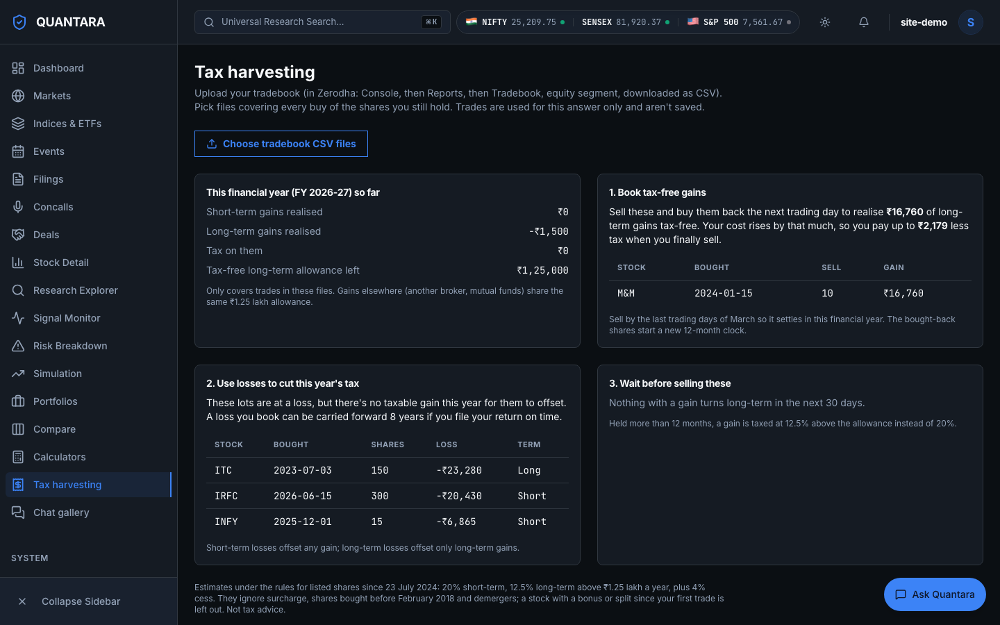
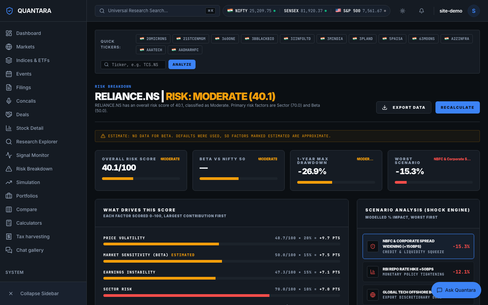

Stock research for Indian markets, on your own machine.
Quantara reads NSE and BSE filings, prices and fundamentals for every listed company, explains each stock's numbers in plain pros and cons, summarises earnings calls, and tells you once a day what changed for the stocks you follow. It runs in Docker on your computer, and your watchlist and holdings are stored only in your own database.

What it does
Built for one investor following Indian equities closely, with the data an expensive terminal would show.
A verdict with its reasons
Every stock gets a call from its numbers (returns on capital, growth, debt, valuation, promoter moves), listed as pros and cons. Stocks with an AI research report get a fuller one.
Screener over 17,000 listings
Every NSE, BSE and US listing, filterable by ROE, ROCE, growth, debt, dividend yield, promoter holding and technicals. Filters can be saved and exported.
Earnings calls, summarised
Transcripts are picked up from exchange filings as they're published, and recordings are transcribed when there's no transcript yet. The AI summary gives tone, guidance, highlights and concerns.
One daily Slack message
After the close: the indices, the day's movers, and each stock you hold or watch, with price alerts hit, new signals and tomorrow's results dates.
Tax harvesting
Upload a broker tradebook to see which long-term gains to book within the yearly ₹1.25 lakh tax-free allowance, which losses would cut this year's tax, and which gains to wait on.
Risk you can read
A risk score broken into volatility, beta, earnings stability and sector, with drawdowns and scenario shocks such as a rate hike or a credit squeeze.
Market plumbing
Bulk and block deals, shareholding changes, promoter pledges, corporate filings, results calendars, IPO analysis, and indices and ETFs with their constituents.
Portfolios from your broker
Import holdings from a broker's CSV export, then simulate and stress-test them, or ask the research chat about any stock.
Screens
From a running instance with real market data. Buy and Hold labels are blurred: this public page isn't the place for calls on real stocks.





Tested against history
The numbers-based verdict was replayed on past dates (30 June 2023 to 2026, the Nifty 500, using only data public on each date) and scored on what the stocks did next.
Its Buy did better than the typical stock in each year tested, by a modest margin. Its Avoid did not: those stocks did about as well as any other. So Quantara now labels them "Weak numbers", which describes the stock rather than calling it a sell.
The replay is in backend/app/services/backtest.py. It uses today's index members, so it flatters stocks that survived.
Run it yourself
You need Docker Desktop and an OpenAI API key for the AI features. Everything else, from listings to prices to filings, comes from public exchange and Yahoo Finance data.
git clone https://github.com/de-ansh/Quantara.git
cd Quantara/backend
cp .env.example .env # set SECRET_KEY and OPENAI_API_KEY
docker compose up -d --buildThen open http://localhost:3000 and register. The first day fills in the stock directory, fundamentals and technicals in the background. Optional: set SLACK_WEBHOOK_URL for the daily digest. The README covers running without Docker.
Built with
- React 19
- TypeScript
- Vite
- TanStack Query
- Tailwind CSS
- Recharts
- Python 3.11
- FastAPI
- SQLAlchemy
- PostgreSQL + pgvector
- Redis
- OpenAI
- Docker